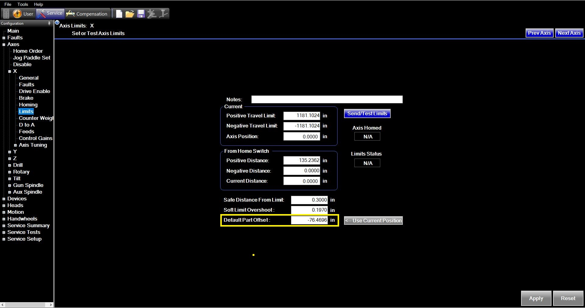
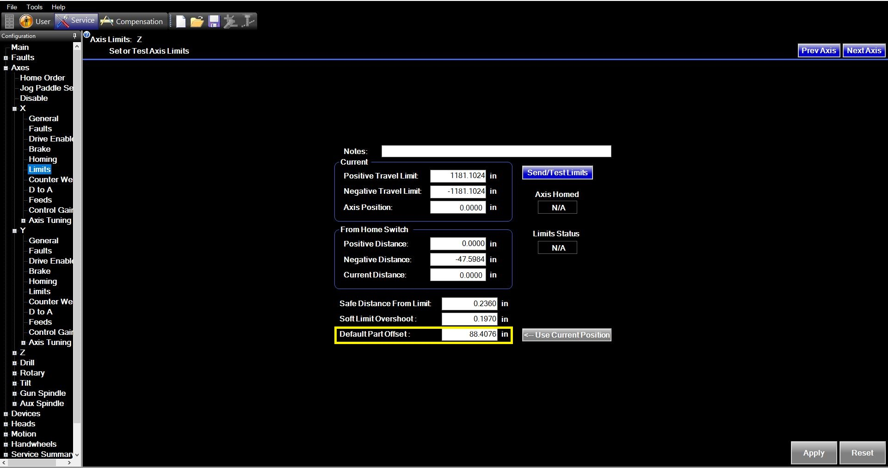

Mechanical Backlash (Lost Motion)
Perform this check before altering any drive ratios. If there is uncompensated mechanical slop, the linear resolution calibration will produce inconsistent results.
Tools Needed
- • Magnetic Base
- • High-resolution dial indicator (reading 0.0001" or 0.001mm)
Set Up the Indicator
Mount the magnetic base securely to the spindle housing, ram, or machine head. Position the indicator stylus against a clean, rigid surface that moves with the opposing machine element (like a 1-2-3 block bolted to the table or a solid fixture). Ensure the stylus is perfectly parallel to the axis of travel to prevent cosine error.
Pre-load the Indicator Critical
Using the handwheel, jog the axis in one direction (e.g., Positive) until the indicator needle rotates at least one full revolution. This ensures the ball nut is fully engaged against the screw threads in that direction.
Establish Zero
Without reversing direction, carefully zero the face of the dial indicator. Next, zero the relative position (or distance-to-go) coordinate on the machine control.
Move Forward & Reverse
- Continue moving the axis in the exact same direction (Positive) for a short, specific distance (e.g., 0.100 inches or 2.0 mm) using the handwheel or MDI.
- Reverse your direction (Negative) and slowly feed the axis back until the machine control display reads exactly 0.0000 again.
Record the Backlash
Look at the dial indicator. It should theoretically return to exactly zero. If the needle falls short of zero, that difference is your mechanical backlash (lost motion).
Verify Consistency
Repeat this forward-and-back test at least three times. If the backlash number is consistent, it must be compensated for in the machine parameters before proceeding. If the number fluctuates wildly, inspect the machine for loose thrust bearings, a loose encoder coupling, or mechanical binding.
Next Step: Handoff
Once mechanical backlash is measured, corrected in the parameters, and verified, proceed to scale the Linear Resolution.
Checking & Correcting Linear Resolution
Calculate and apply the correct electronic gear ratio in a Bosch servo drive for all linear axes (X, Y, Z, and Drill).
Tools Needed
- • Magnetic Base & High-Resolution Indicator (0.0010" or 0.0254mm)
- • Known Precision Length Standards (See Calibration Dept. for kit)
- • Short Length Standard (21.000", external to kit)
- • Long Gundrill spindle plug (See Assembly Dept. for tool)
- • Indicator Holder Articulating Arm
- • Laptop with IndraWorks, if not installed on control
Important Note on Bosch Ratios
Bosch drives do not accept decimal places in gear ratios. Both the Input and Output values must be scaled as whole numbers (e.g., an ideal ratio of 2.2503 : 1 must be entered as 22503000 : 10000000). Typically, the Output Ratio is already set to a large round number. You will only be modifying the Input Ratio.
Record the Current Ratio
Before making any movements, navigate to the Axis mechanics scaling parameters in the drive software and record the exact Current Input Ratio and Current Output Ratio.
IndraWorks Navigation Path:
Motor, drive mechanics, measuring systems > Axis mechanics/scaling
Parameter IDs: Input Ratio: S-0-0121 | Output Ratio: S-0-0122

Measure the Axes (Data Collection)
CRITICAL WORKFLOW
Do NOT collect measurements for all axes at once. You must perform this entire process (Measure → Calculate → Update Ratio → Verify) for one axis at a time. Modifying all axes at once can inadvertently skew the geometric results. Complete the full cycle for X, then move to Y, etc.
Select the axis you are calibrating and perform the physical sweep to determine the machine's actual read-out vs the standard's true nominal length.
X-Axis Procedure
- Clean and stone the table surface of any high spots.
- Assemble the surface ground washer/plate to one end of the length standard (this avoids introducing backlash during the sweep).
- Set V-blocks on the table parallel to the X-axis direction. Place the length standard in the V-blocks.
- CRITICAL: Check the ground metal rings on the ends of the standard with your indicator. It must be indicated in 100% straight to correctly measure the length. Note the calibration sticker length.
- Jog indicator to one end of the standard, set preload to 0.0100", and Preset the X-axis (Part Position) to Zero.
- Slowly jog to the opposite end and touch the precision ground washer. Do not exceed 0.0100" preload and do not change jog direction.
- Record the X-axis Part Position readout.
Y-Axis Procedure
- Remove the precision ground washer. Stand the length standard straight up on a clean/stoned surface.
- Position the bottom set screw into the table's T-slot grooves. Set V-blocks tight around the standard for stability.
- Jog indicator close to the table top, set preload to 0.0100", and Preset the Y-axis (Part Position) to Zero.
- Jog the indicator well above the length standard to take up any introduced backlash.
- Slowly jog the Y-axis down to the top of the standard. Find the highest surface spot. Do not jog past the top and reverse (introduces backlash).
- Hit the 0.0100" preload and record the Y-axis Part Position readout.
Z-Axis Procedure
- Use the Short Length Standard (21.000"). Set up V-blocks in the Z direction.
- Place the short standard onto the V-blocks. Note: It may need to hang off the table slightly to allow the indicator to reach both ends within travel limits.
- CRITICAL: Indicate the standard 100% level and square to the Z-axis length-wise. Precision here dictates resolution accuracy.
- Jog indicator to one end, set preload to 0.0100", and Preset the Z-axis (Part Position) to Zero.
- Jog to the opposite end and touch the precision ground washer with the exact same 0.0100" preload.
- Record the Z-axis Part Position readout.
Drill Axis Procedure
- Use the Short Length Standard (21.000"). Set up V-blocks in the Drill direction on the Drill axis Way bar.
- CRITICAL: Sitting on the ways should naturally square the V-blocks length-wise. Verify the standard is 100% level with the indicator.
- Install the Long Gundrill spindle plug to mount/reference the indicator.
- Jog indicator to one end, set preload to 0.0100", and Preset the Drill axis (Part Position) to Zero.
- Jog to the opposite end and touch the precision ground washer with the exact same 0.0100" preload.
- Record the Drill axis Part Position readout.
Calculate the Correction Multiplier
Enter your values below to dynamically calculate the new Input Ratio. Do not round numbers manually. The calculator retains 64-bit precision to prevent scaling errors over long travels.
Linear Resolution Calculator
InteractiveRaw Multiplier
New Input Ratio
Automatically rounded to nearest whole number.
Update Ratio (Control Specific)
A DIGITAL (Q PROXY / INDRAWORKS)
- Disable drives. Switch to Parameter Mode (PM).
- Navigate to:
Motor, drive mechanics, measuring systems > Axis mechanics/scaling - Enter the calculated whole number into the Input Ratio (S-0-0121) field. Leave the Output Ratio exactly as it was.
- Switch back to Operating Mode (OM).
- Set the absolute position of the encoder to establish the new baseline (via
Position data reference encoder 1 > Set absolute positionin OM). Clear any drive faults that were generated during the mode switch.
B ANALOG (MILL PROXY)
- Navigate to Service parameters in the Aldebaran UI.
- Locate the axis resolution scaling parameter.
- Apply scaling factor and save.
- Power cycle the control to ensure scaling is fully applied across coordinate systems.
Enable Drives and Verify
Turn the drives back on and reset your preset/work offset. Perform one final physical measurement against your standard to verify the machine resolution is now perfectly matched to the physical distance.
Troubleshooting Resolution Inconsistencies
If the machine fails to land on the correct dimension after applying the new Bosch gear ratio, check the following common issues before recalculating.
1. Procedural & Math Errors
- Math Reversal: Ensure you divided Control Measured by Standard Actual. Reversing this will double your error.
- Dropped Zeros: Verify the Output Ratio was not accidentally modified (e.g. missing a zero).
- Failure to Reset Absolute Position: Ensure the coordinate system was reset after switching back to Operating Mode.
2. Mechanical & Hardware Issues
- Backlash (Lost Motion): Are you measuring from different directions? Always approach start/end points moving in the exact same direction.
- Loose Encoder Coupling: If measurements are completely erratic on a motor-mounted encoder, the coupling may be slipping.
- Dirty/Misaligned Scales: Clean linear scales and verify read-head LED status to ensure counts aren't dropping.
3. Measurement Setup Errors
- Cosine Error: Is your standard perfectly parallel? If skewed, the machine travels a hypotenuse (always longer). Indicate your standard first.
- Thermal Expansion: Calibrating a "hot" machine results in inaccurate ratios when it cools down.
Next Step: Handoff
With linear X/Y/Z/Drill resolution verified, ensure the B and A rotational axes are scaled. Proceed to Rotary/Tilt Resolution.
Rotary & Tilt Resolution
Calculate and apply the correct electronic scaling for the B-Axis (Rotary) and A-Axis (Tilt).
Tools Needed
- • Magnetic Base & High-Resolution Indicator
- • Indicator Holder Articulating Arm
- • Precision Block (clamped) or Shoulder Bolt
- • Precision Rod Cat 50 holder
- • Graphite Z Tube with Metal feet (Tripod)
- • 10mm Tooling Ball & Holder
- • Laptop with IndraWorks, if not installed on control
Part A: Rotary Axis Resolution
Squareness Check
Ensure the "Tilt" axis is physically square before gathering this info. Check with a ceramic square both by jogging the Y-axis and tramming the spindle with the tilt set at 0°.
360° Sweep
- Ensure Rotary Table is at 0 or use machine position numbers for this procedure.
- Indicate a precision straight edge (or shoulder bolt) parallel to the machine at 0°.
- Rotate straight edge 360° degrees and check that same surface to see if it is still parallel at 360°.
Apply Correction
If the surface is not parallel, adjust the "Rotary" Resolution in Service until it is correct. Do this by rotating the table to make the straight edge parallel again, and use the Rotary axis readout on the screen to calculate the resolution error.
IndraWorks Update Path:
Axis [7] Rotary Table > Axis mechanics / scaling (Extended)

Part B: Tilt Axis Resolution
PRO-TIP: Machine vs. Part Coordinates
When performing resolution sweeps, it is critical to understand which coordinate system you are referencing:
- Part Coordinates (G54): Can be preset to any value. If a Rotary axis spins past 360°, the readout will wrap back to zero.
- Machine Coordinates: The absolute reference set in the drive software. Always use Machine Coordinates for kinematic calculations.
- Tilt Axis Limits: Unlike the Rotary table, the Tilt axis has hard and soft travel limits, maxing out at +15° and -15°.
Setup Tooling Ball & Tripod
- Put the 10mm tooling ball in the Auxiliary spindle (remove any run-out).
- Setup a tripod indicator on the table high enough and close enough so that you can reach it at 0°, +15°, and -15° Tilt angles.
Perform 5-Point Sweep
You will need 5 sets of numbers. Enter them directly into the calculator below as you gather them.
- With tilt set at 0°, move the tooling ball to 0, 0, 0 on the tripod stand. Record the Machine Y, Z, and Tilt coordinates.
- Repeat this process with the tilt commanded to -15°, -7.5°, +7.5°, and +15°.
Calculate & Apply Resolution Scaling
Enter your 5 data sets into the interactive kinematic calculator below to determine the exact Tilt Resolution error. The algorithm automatically fits the circle to determine the physical angle swept.
Tilt Resolution Kåsa-Fit Calculator
Interactive5-Point Sweep Coordinates
Scaling Results
(Actual) 0.0000°
(Measured) 0.0000°
Resolution Multiplier
Multiply Current Ratio by this value.
IndraWorks Update Path
Navigate to the Scaling extended tab for the Tilt axis to update resolution ratios.

Next Step: Handoff
Once rotary and tilt resolutions are dialed in, move on to verify the Linear Squareness of the machine geometry.
Linear Squareness
Ensuring orthogonal geometry across the X, Y, and Z axes.
Tools Needed
- • Magnetic Base & High-Resolution Indicator
- • Indicator Holder Articulating Arm
- • Precision Machine Square (Verified)
- • Marker
Kinematics Reminder (Right Hand Rule)
Tarus Gundrills are Horizontal machines. They strictly follow the Cartesian Right Hand Rule relative to the spindle nose:
- +X Axis: Travels Left/Right (Index Finger)
- +Y Axis: Travels Up/Down (Thumb)
- +Z Axis: Travels In/Out towards the workpiece (Middle Finger)

YZ Squareness (Up/Down vs In/Out)
- Place the precision square on the table with the blade pointing straight UP (Y direction) and the base extending IN/OUT (Z direction).
- Mount the indicator in the Aux Spindle. Touch the indicator to the side of the square's base along the Z-axis.
- Sweep the Z-axis to align the square perfectly parallel to Z travel. Clamp the square.
- Move the indicator to touch the vertical blade of the square. Sweep the Y-axis UP/DOWN.
- Record the Error: Note the deviation. This maps the YZ orthogonal error.
XY Squareness (Left/Right vs Up/Down)
- Keep the square on the table, but rotate it 90 degrees so the base extends LEFT/RIGHT (X direction) and the blade still points UP (Y direction).
- Touch the indicator to the side of the square's base. Sweep the X-axis to align the square perfectly parallel to X travel. Clamp.
- Move the indicator to touch the vertical blade of the square. Sweep the Y-axis UP/DOWN.
- Record the Error: Note the deviation. This maps the XY orthogonal error.
XZ Squareness (Left/Right vs In/Out)
- Lay the precision square flat on the table (or block). Align the base LEFT/RIGHT (X direction) and the blade IN/OUT (Z direction).
- Touch the indicator to the base of the square. Sweep the X-axis to align perfectly parallel. Clamp.
- Move the indicator to the blade of the square. Sweep the Z-axis IN/OUT.
- Record the Error: Note the deviation. This maps the XZ orthogonal error.
Next Step: Handoff
With squareness mapped and basic machine geometry verified, proceed to align the Gundrill Spindle Tram.
Gundrill Spindle Tram
Mechanical alignment of the Gundrill Spindle using front nose bushings and rear chipbox bearings. Independent of Aux Spindle accuracy.
Tools Needed
- • Gundrill Spindle Plug w/ set screw
- • Precision Rod
- • Rear Chipbox Bearing
- • Front Nose Bushing
- • 2 Interapid Indicators & Mag Bases
- • Allen wrench set (Inch/Metric)
- • 1ft pipe (for breaking bolts free)
Check Gundrill Nose Face
Jog Tilt axis to exactly Zero. Remove the nose adapter if mounted. Jog the indicator along the face in X/Y.
Acceptance Criteria: Within .0005 total error. (If greater, Tilt Home Offset must be adjusted).

Tram I.D. of Bearing
With the plug in the GD Spindle and indicator mounted, tram the I.D of the Bearing. To adjust, loosen mounting screws (leave 1 tight to pivot). Use a brass drift to tap and correct up/down & left/right error.
Acceptance Criteria: Under .0005 total error.


Check Face of Bearing
Check the face of the bearing. If error is excessive, shim stock may be needed, or remove the bearing to stone & clean behind it.
Acceptance Criteria: Within .0010 total error.

Install Bushings & Inspection Rod
Install the Rear Chipbox Bushing & Front nose bushing. Insert the Inspection Rod into both and split the length overhang difference equally from the front/rear.

Final Verification Sweep
Set up 2 indicators tight to the bushing (Zero at Top & Side). Check for error by jogging the Z axis. If error exists, adjust the Nose Piece by loosening bolts (leaving 1 tight to pivot).


Next Step: Handoff
If Step 1 indicated a face error > .0005, proceed to Tilt Axis Home Offset. Otherwise, proceed to Aux Spindle Offsets.
Tilt Axis Home Offset
Establish a precise machine zero reference for the A-axis. Essential for geometric accuracy.
Mechanical Leveling & Sweep Setup
- Install precision bar in main spindle. Use torpedo level to jog Tilt axis until approximately horizontal (rough zero).
- Remove precision bar. Install collet holder with test indicator ("worm" arm) oriented 90° to spindle centerline.
- Place machinist square on table, face towards spindle.
Measure Jog Error
- Preload indicator against square (-Z direction). Manually rotate spindle 180° ensuring full contact.
- Find highest (+Y) and lowest (-Y) points of indicator arc. Mark these two horizontal lines on the square.
- Jog Y-axis to bottom line. Jog Z to touch square and Zero dial.
- Jog Y-axis straight up to top line. Record this value (Jog Error).
Sweep & Tilt Correction
- Without jogging axes, manually rotate spindle to sweep between the top and bottom marks. Note the TIR (Sweep Error).
- Adjust Tilt axis in small increments until Sweep Error exactly matches your recorded Jog Error.
- The axis is now physically at true zero. Do not move it.
Set Home Offset (Control Specific)
Command the drive to accept the current physical position as permanent zero.
A DIGITAL (Q PROXY / INDRAWORKS)
- End Qproxy service and close Aldebaran.
- Launch IndraWorks and connect to the Tilt axis drive.
- Navigate in the left tree to:
Motor, drive mechanics, measuring systems > Encoder 1 / motor encoder > Position data reference encoder 1 - Ensure the axis is physically located in the Zero position you just established.
- Ensure the drive is in Operating Mode (OM). Check the top toolbar; if "Set absolute position" is grayed out or throws a C0300 error, click the green OM button to switch from PM.
- Click the Set absolute position button (located above "Drive-controlled homing procedure").
- Restart Qproxy, launch Aldebaran, home the machine, and command Tilt to Zero. Re-sweep to verify.


B ANALOG (MILL PROXY)
- Open the Aldebaran service interface on the controller.
- Navigate to:
Service > Axis > Tilt > Limits(or Home Offset). - Adjust the Home Offset value by the measured error amount to zero the axis.
- Save the configuration and Power Cycle the control to apply.
CRITICAL POST-PROCEDURE
After modifying the Tilt axis zero, geometry has changed. You MUST immediately proceed to verify Spindle Offsets and recalibrate Toolbump.
Aux Spindle Offsets
Finding the difference in X, Y, and Z axis directions from the Auxiliary spindle to the Gundrill spindle.
Tools Needed
- • Magnetic Base & Indicator
- • Cat50 holder with 3/8 Dowel installed
- • Nose Bushing with 3/8 Dowel installed
Prerequisite Check
Tram and Tilt Axis Home Offset must be verified before proceeding. Any changes to them will invalidate these offsets. Aux Tool length should be forced to zero (or 0.000001 if zero is rejected) along with the GD Nose Bushing Length found in the UI Icon "Gundrilling Parameters" for all steps below.


X-Axis Offset
- Extend the Aux Spindle and touch indicator to side of Aux Spindle dowel. Sweep Y up/down to find high point. Preload 0.010" and Preset X-axis to zero.
- Retract the Aux Spindle and move indicator to side of GD Spindle dowel. Sweep Up/Down to find high point, jog X until preload matches 0.010".
- Record X readout value. Enter into Service/Heads/Gundrill/Parameters Spindle Center X: and verify.

Y-Axis Offset
- Extend the Aux Spindle and touch the indicator to bottom of Aux Spindle dowel. Sweep X left/right to find high point. Preload 0.010" and Preset Y-axis to zero.
- Retract the Aux Spindle and move indicator to bottom of GD Spindle dowel. Sweep X left/right to find high point, jog Y until preload matches 0.010".
- Record Y readout value. Enter into Service/Heads/Gundrill/Parameters Spindle Center Y: and verify.
Z-Axis Offset
- Insert Cat50 holder into extended Aux Spindle. Touch indicator to Aux Spindle Flange, preload by 0.010", and Preset Z-axis to zero.
- Insert Nose Bushing/dowel into GD Spindle. Retract the Aux Spindle then Touch indicator to face of GD spindle Flange, jog Z until preload matches 0.010".
- Record Z readout value. Enter into Service/Heads/Gundrill/Parameters Spindle Center Z: and verify.
CRITICAL POST-PROCEDURE
Offsets dictate tool position. You MUST immediately perform a Toolbump Calibration before attempting standard operations.
Offset Rotary Table Centers
Procedure for finding the absolute X and Z Table Center Positions.
Prerequisite Check
A Manual Tool length gathering routine needs to happen. The length has to be known and accurate so make sure to run the Manual Tool Measurement before adjusting the Rotary Table Centers. This is found on the Handheld remote under Tools > Manual Measurement.
Find X Table Center Position
- Set straight edge on table at Rotary 0°. Indicate Straight edge so that it is straight and level.
- Rotate table to 90 degrees and preset the rotary table position to zero degrees using Preset found on the handheld remote.
- Turn on spindle to 1000rpm and jog edge finder to X axis edge of straight edge.
- Jog edge finder in X axis till edge finder tip makes contact with straight edge, the tip will spin true once touching, keep jogging slowly till the tip breaks into a wobble and tip is slightly off center rotation.
- Record First X Machine Position: (Don't preset, record Machine Position found within the Execute form open and Machine selected, record that X machine Position).
- Rotate table 180°.
- Turn on spindle to 1000rpm and jog edge finder to X axis edge of straight edge.
- Jog edge finder in X axis till edge finder tip makes contact with straight edge, the tip will spin true once touching, keep jogging slowly till the tip breaks into a wobble and tip is slightly off center rotation.
- Record Second X Machine Position: (Don't preset, record machine position found within the Execute form open and Machine selected, record that X machine Position).
- Add the two Machine Position numbers together and then divide by 2. This is the X Table Center. Enter this into
Service > Axis > X Axis > Limits.

Verify X Table Center Position
- Rotate back to Rotary Table zero (Straight Edge parallel to Z axis).
- Open Coordinate system and set the X Target to
+0.100, apply, and close form. - Turn on spindle to 1000rpm and jog edge finder to X axis edge of straight edge.
- Jog edge finder in X axis till edge finder tip makes contact with straight edge, the tip will spin true once touching, keep jogging slowly till the tip breaks into a wobble and tip is slightly off center rotation.
- Preset First X Part Position. You should see the X readout update that edge value to X=0.100 (Using handheld remote Preset Function, preset X which will be the 0.100 target we entered into the Coordinate System).
- Rotate table 180°.
- Turn on spindle to 1000rpm and jog edge finder to X axis edge of straight edge.
- Jog edge finder in X axis till edge finder tip makes contact with straight edge, the tip will spin true once touching, keep jogging slowly till the tip breaks into a wobble and tip is slightly off center rotation.
- View second X Part Position (Don't preset, view X Part Position UI readout. X axis Part readout should show exactly
0.1000).
Adjustment Loop: If the Part X readout reads anything other than 0.1000 +/-0.0030, you will have to make an adjustment to the Default part offset until it does. Note: Any changes to the X default part offset value means you must repeat the verification loop (re-touching the edge, presetting, rotating 180°, re-touching, and viewing the readout).
Find & Verify Z Table Center Position
CRITICAL PREREQUISITE: The X Table Center offset must be 100% verified and accurate before continuing (reading exactly 0.1000 at 0° and 180°). The straight edge face already has the established X preset. Do NOT preset the Z axis or Rotary Table position using the handheld remote here.
- Rotate table to 90° or 270° (part face facing you).
- Using the already established X preset, move directly into the Z Table Offset check.
- With the spindle off, use a 0.1000" shim stock (or 0.0010" shim depending on your procedure). Jog the edge finder tip up against the face of the straight edge until the shim drags.
- Once touching, the X position readout on the UI should read exactly
0.0000. This confirms the Z table center position is physically accurate.
Adjustment Loop: If the readout reads anything other than 0.0000, you must adjust the Default Z Part Offset (Service > Axis > Z Axis > Limits).
WARNING: Changing the Default Z Part offset will change your existing X preset!
- Start back over on the X Center Table offset.
- Rotate to 0° and re-preset the X edge to
0.1000. - Verify at 180°.
- Rotate to 90°/270° and check the face again with the shim stock.
- Repeat this loop until X correctly shows
0.1000for both rotations, and the X position readout shows0.0000when touching the 0.1000" shim stock.

Next Step: Handoff
Once Table Centers are established, perform the final Toolbump Calibration.
Toolbump Calibration
Teach the machine the exact location of the tool measurement switch. The absolute foundation for running accurate operations.
Prerequisites & Setup
- Ensure Rotary and Tilt axes are set to Zero.
- Use a Twist Drill or Flat End Mill. No radius tooling.
- Note: If performed right after Offsets/Tilt calibration, a Cat50 with dowel or Long Edge Finder is fine, provided length was manually measured and is perfectly accurate.
Measure & Update Tool Rack
Insert tool into Aux spindle. Manually measure its exact length and enter this value into the Tool Rack for the specific tool being used.
Position Tool over Switch
Center tool over Tool Bump in X/Y axes. Retract Z-axis to desired starting height (ensure height clears the longest expected tool).
Run Calibration Routine
- Navigate:
File > Exit to Service > Devices > Tool Bumps. - Verify your manual tool length appears correctly in the field.
- Click Calibrate Bump and Store Position. Tool will move and touch switch.
- Click Apply, then Save (Floppy Disk icon).
Final Verification
Return to main user interface. Run a standard automated tool bump routine. Result must be within .002" of manual length.
Next Step: Handoff
Toolbump is calibrated. If performing a full machine setup, proceed to Probe Calibration.
Probe Calibration
Calibrating the spindle probe for part inspection and setup.
Content Pending
The detailed procedure for calibrating the spindle probe will be inserted here.
Activity Log
Record of structural updates, edits, and revisions made to this guide.